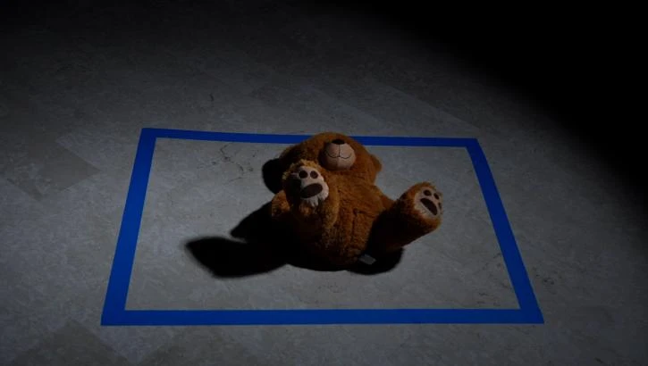

In progressExperimental short-film series
Échos du passé
Traces of the past return through the senses. Gestures, light, steam, and physical materials meet repetition and geometric boundaries.
4 chapters filmed · Goût in development
- Role
- Writer / Director / Editor
- Duration
- To be confirmed · Series in progress